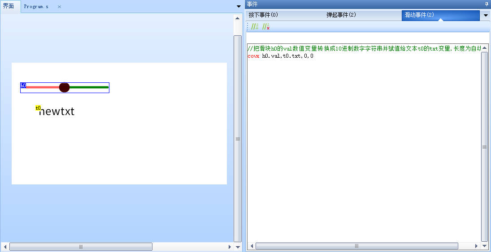
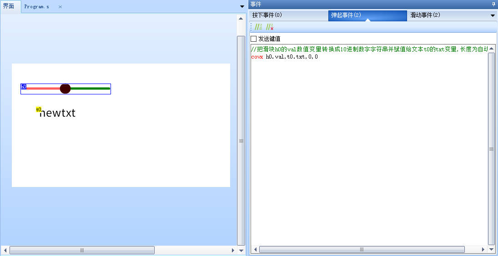
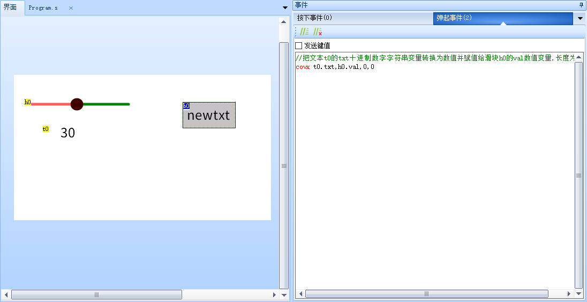
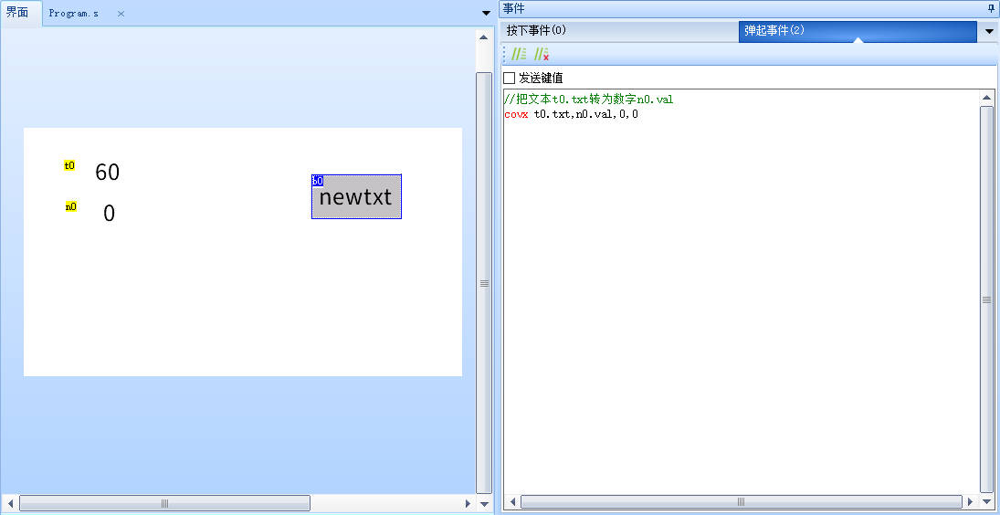
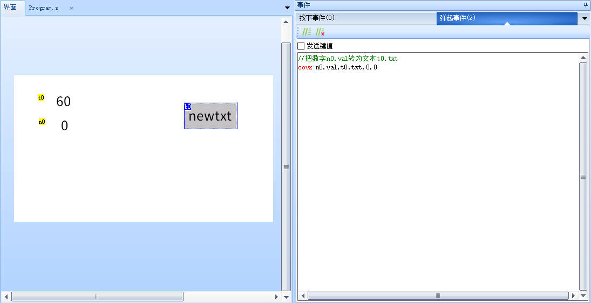
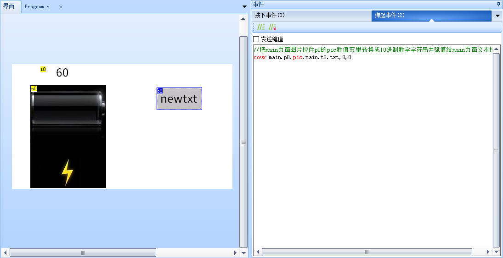

covx-变量类型转换
注意
串口屏上仅有两种数据类型，即数值和字符串类型，当需要将字符串类型转换为数字类型或者将数字类型转换为字符串类型时，才使用covx指令
目前仅有txt、path、dir、filter这4个属性属性是字符串型属性，其他属性一般都是数值型属性。
covx att1,att2,lenth,format
att1:源变量
att2:目标变量
lenth:字符串的长度(0为自动长度，非0为固定长度)
format:申明数值类型(0-数字;1-货币;2-Hex)
covx-示例1
//把滑块h0的val数值变量转换成10进制数字字符串并赋值给文本t0的txt变量,长度为自动
covx h0.val,t0.txt,0,0
在滑块控件的滑动事件和弹起事件中都要写


covx-示例2
//把文本t0的txt十进制数字字符串变量转换为数值并赋值给滑块h0的val数值变量,长度为自动
covx t0.txt,h0.val,0,0

covx-示例3
//把文本t0.txt转为数字n0.val
covx t0.txt,n0.val,0,0

covx-示例4
//把数字n0.val转为文本t0.txt
covx n0.val,t0.txt,0,0

covx-示例5
//把main页面图片控件p0的pic数值变量转换成10进制数字字符串并赋值给main页面文本控件t0的txt变量,长度为自动
covx main.p0.pic,main.t0.txt,0,0

注意
lenth始终表示的是字符串长度，数值转字符串的时候是目标变量的长度，字符串转数值的时候是源变量长度。
当原变量是数值属性时，目标变量必须是字符串属性，当原变量是字符串属性时，目标变量必须是数值属性。
如果目标变量和源变量类型相同，转换失败。
covx指令-相关链接
covx指令-样例工程下载
演示工程下载链接：